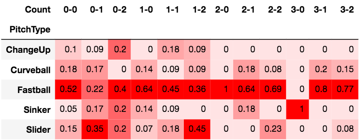
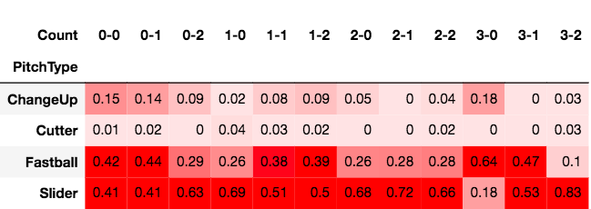

August 20th, 2020: Back to Basics
With my summer classes over, I finally have time to dedicate to fun stuff - but mostly just baseball. While 2020 has undeniably been one of the worst years ever, I have enjoyed the hell out of my classes and grown a lot as a student this year. Data 100, CS 188, Prob 140, and Intro to Game Theory have introduced concepts that are not only applicable in the Data Science industry, but also quite relevant in the baseball analytics field.
Prior to the cancellation of the 2020 NCAA baseball season, I began working with a team of analysts for the Cal Baseball team. Although the Golden Bears only played 16 games (where they went 5-11), going to every home game and doing advanced scouting for the team's upcoming series using data was super fun and a great way of practicing my technical skills. During the season I found that there is not a lot of Python libraries that are specialized for baseball analysis, as opposed to R where there is a ton of literature on sabermetrics. Rather than deep diving into R, I began building my own visualizations and charts using a few Python libraries.
Below are 2 tables containing the conditional probabilities of pitch types for given counts:
Table 1: Nick Proctor Pitch Type Probability Distribution
Table 1 displays Cal Pitcher Nick Proctor pitch type distribution and reveals a lot about his strategy. Unsurprisingly, we see that his fastball/sinker is his most trusted pitch to get a strike - going to it 86% of the time when in a 3 ball count. When ahead in the count, we see that Procotor goes to his nasty slider ~30% of the time in 2 strike counts.
Table 2: Max Meyer (2020 #3 Overall Pick) Pitch Type Probability Distribution
While these tables may be useful for pitchers to see how there pitch mix differs by count - I think that this information is probably more useful for hitters. For example, Table 2 shows that #3 Overall Pick Max Meyer throws his slider 83% of the time in full counts. If a hitter knows this information, they should know to sit slider during full counts because there is a 10mph difference on average between Meyer's fastball and slider.
I know that this scouting tech already exists at the major league level, but I am unsure if college teams are doing this using Trackman data. Either way, I still have a lot to work on to make this a useful tool for the team - maybe it is a good thing the future of collegiate sports is up in the air so I have more time to work on this.